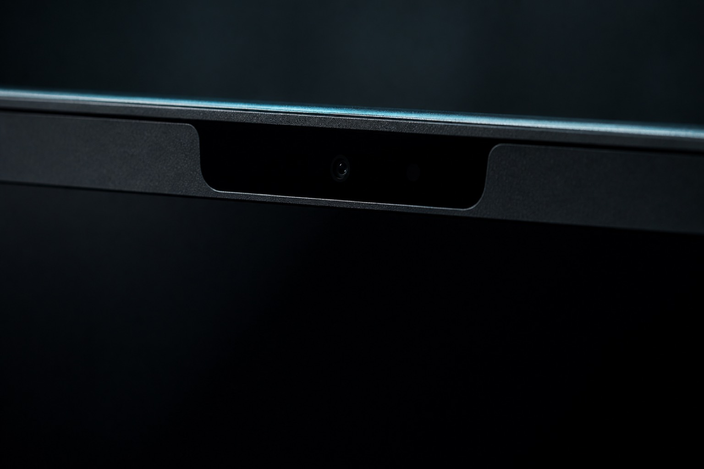

Codex quota, ambient in the notch.
Two satellites beside the notch show your 5-hour and weekly Codex quota. Hover to read them, click to configure.
A working replica of the app's satellites, using simulated values. Hover the stage to expand them, click a satellite for the settings bar, and leave it alone for three seconds.

Built for a glancing read. The notch is already where your eyes rest a hundred times a day. The satellites put both Codex quota windows there, so checking them costs you nothing and you never leave what you were doing.
Two panels, never in the way. They do not take keyboard focus and they do not activate the app when the cursor crosses them. Move the pointer away and they retract immediately.
Two satellites, one notch
Each satellite is a 24 point panel that grows to 60 point when you look at it. One carries the short window Codex reports, the other the weekly window.
Read at a glance
Each window is drawn as an arc that starts at twelve o'clock and fills clockwise, so a complete circle is a full quota and a sliver means it is nearly spent.
Weekly would sit alongside it at 41 percent. A real install shows your own numbers, and they refresh on the interval you choose.
A compact settings bar
Clicking either satellite opens four icon-only controls: Launch at Login, the quota check frequency, the read-only count of available reset credits, and Quit. Three seconds of inactivity dismisses the bar, and clicking a satellite again closes it at once. The frequency control cycles through one, five and fifteen minutes.
Stale data never pretends
If a refresh fails, the satellites dim and keep the last good reading. The reset count shows an unknown marker rather than a guess.
The same two windows on your desktop
A WidgetKit widget carries both quotas to the desktop and to Notification Center, so the numbers are there even when the notch is out of sight.
- Small and Medium layouts, both with equal-width gauges.
- Clicking the widget re-reads the snapshot the app cached. No network request and no app launch.
- The widget never reads your Codex login and never calls the usage endpoint itself.
Layout preview with simulated values.
It reads your Codex login. It never manages it.
The login you already have
Codex owns authentication. The app reads the local Codex state and uses that existing token for usage requests, the same way the CLI does.
No token handling
No refresh exchange, no writes to your Codex auth files, and no stored credentials anywhere.
No login flow
No OAuth, no device code, no browser window. If Codex is not already signed in, the app has nothing to read.
Nothing leaves the Mac
No telemetry, no analytics, no cloud sync, and no third-party runtime dependencies.
What it needs
Or later, on a Mac with a notch for the satellites. Native frameworks only.
The widget runs everywhere, including Mac mini, Mac Studio and external displays.
An existing sign-in on this Mac. CodexSatellites never creates one for you.
Free and open source, with the source and release notes on GitHub.
Download and install
Download
Take the DMG from the Releases page.
Install
Drag CodexSatellites into Applications before launching, so Launch at Login and the widget extension register from a stable path.
Launch
The satellites appear beside the notch, and the widget joins the gallery.
CodexSatellites reads your existing Codex login on first launch and starts polling at the interval you choose.
Published builds are ad-hoc signed and not notarized yet. macOS shows a Gatekeeper warning the first time you open the app. Right-click the app and choose Open, or allow it under System Settings, Privacy and Security, Open Anyway.
A notarized Developer ID build is not published yet.